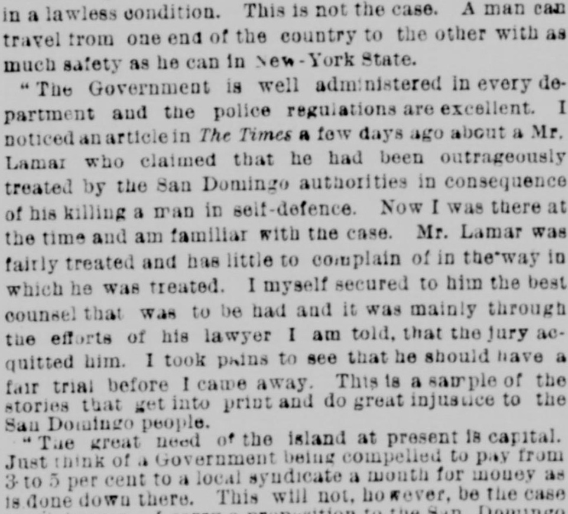

I noticed an article in The Times a few days agoVi un artículo en The Times hace unos días
New-York Tribune. New York [N.Y.], May 9, 1886. Page 11. Published by New York Tribune. A daily newspaper, 1866–1924.New-York Tribune. New York [N.Y.], 9 de mayo de 1886. Página 11. Publicado por New York Tribune. Periódico diario, 1866–1924. View the originalVer el original

An individual interviewed by the newspaper disputed a prior New York Times report regarding Mr. Lamar, asserting that Lamar received a fair trial and competent legal representation after killing a man in self-defense in San Domingo. Additionally, the source stated that the island's primary need is capital, noting that New York capitalists are currently considering propositions to establish a local bank and build a railroad to develop the interior.Un interlocutor entrevistado por el rotativo rebatió una crónica anterior de The New York Times relativa al Sr. Lamar, sosteniendo que este disfrutó de un juicio con todas las garantías y de una adecuada defensa letrada tras ultimar a un individuo en legítima defensa en Santo Domingo. Aseguró por añadidura la fuente que la necesidad primordial de la isla radica en allegar capitales, manifestando que financieros neoyorquinos evalúan a la sazón propuestas para instituir una entidad bancaria local y construir un ferrocarril de fomento hacia las comarcas del interior.
FULL TEXT:TEXTO COMPLETO:
New-York Tribune May 9, 18869 de mayo de 1886
in a lawless condition. This is not the case. A man can travel from one end of the country to the other with as much safety as he can in New-York State.en una condición sin ley. Este no es el caso. Un hombre puede viajar de un extremo del país al otro con tanta seguridad como puede en el Estado de Nueva York.
"The Government is well administered in every department and the police regulations are excellent. I noticed an article in The Times a few days ago about a Mr. Lamar who claimed that he had been outrageously treated by the San Domingo authorities in consequence of his killing a man in self-defence. Now I was there at the time and am familiar with the case. Mr. Lamar was fairly treated and has little to complain of in the way in which he was treated. I myself secured to him the best counsel that was to be had and it was mainly through the efforts of his lawyer I am told, that the jury acquitted him. I took pains to see that he should have a fair trial before I came away. This is a sample of the stories that get into print and do great injustice to the San Domingo people.«El Gobierno está bien administrado en cada departamento y las regulaciones de la policía son excelentes. Noté un artículo en The Times hace unos días sobre un Sr. Lamar que reclamaba que había sido tratado ultrajosamente por las autoridades de Santo Domingo a consecuencia de haber matado a un hombre en defensa propia. Ahora bien, yo estaba allí en ese momento y estoy familiarizado con el caso. El Sr. Lamar fue tratado justamente y tiene poco de qué quejarse en la manera en que fue tratado. Yo mismo le aseguré el mejor abogado que había y fue principalmente a través de los esfuerzos de su abogado, me dicen, que el jurado lo absolvió. Me tomé el cuidado de ver que tuviera un juicio justo antes de venirme. Esta es una muestra de las historias que llegan a la imprenta y hacen gran injusticia al pueblo de Santo Domingo.
"The great need of the island at present is capital. Just think of a Government being compelled to pay from 3 to 5 per cent to a local syndicate a month for money as is done down there. This will not, however, be the case much longer."«La gran necesidad de la isla en la actualidad es capital. Solo piense en un Gobierno viéndose obligado a pagar del 3 al 5 por ciento a un sindicato local al mes por dinero como se hace allá abajo. Esto no será, sin embargo, el caso por mucho tiempo»